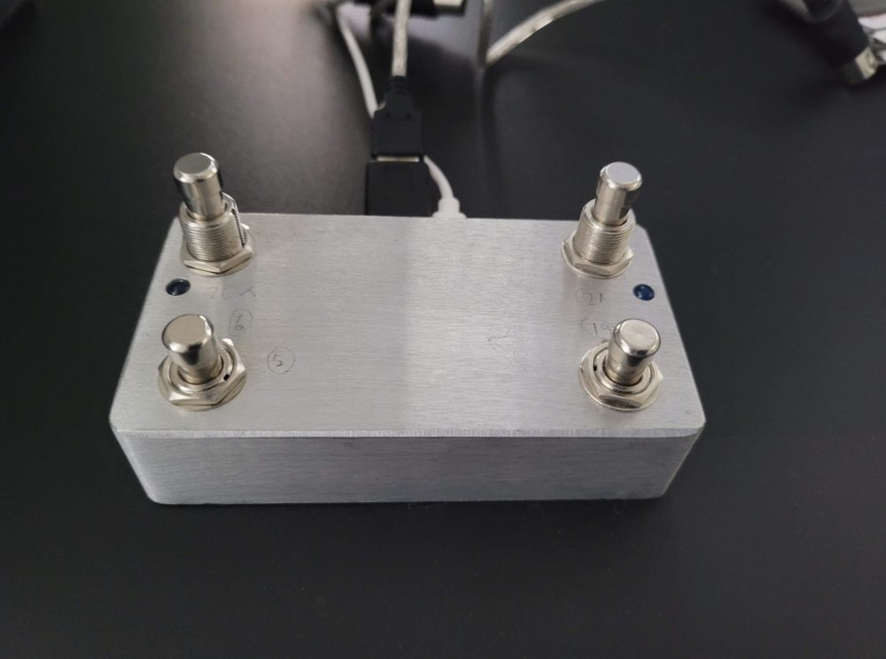
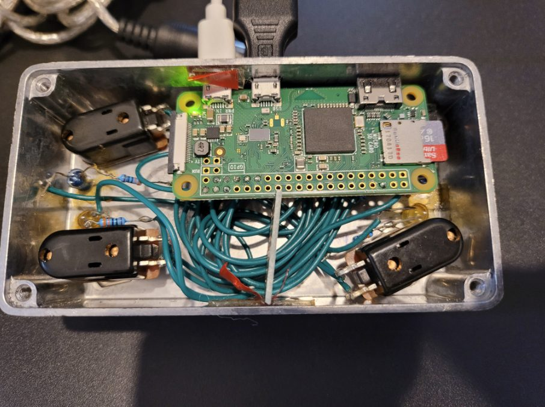

I wanted four more footswitches for my Atomic Amplifire 6 and found that a Raspberry Pi makes a perfectly good MIDI controller.
PublishedJune 2020
ByMark Bala
FieldRaspberry Pi


Four footswitches wired to a Pi Zero's GPIO, each sending a predefined MIDI Control Change message to whatever device is plugged in — with LED feedback and short/long-press handling so every switch does double duty.
Parts
Raspberry Pi Zero
4 × footswitches, wires and resistors
4 × LEDs
USB-to-MIDI cable
OTG cable so the Pi Zero accepts USB-A
A casing
How it works
Four footswitches sit on the Pi's GPIO, each with its own LED indicator.
Pressing a switch sends a predefined MIDI Control Change (CC) message — set in the code — to the connected device.
It distinguishes short from long presses, so each switch can trigger two actions.
LEDs give visual feedback whenever a press registers.
On startup, all LEDs flash in sequence to show the controller is ready.
The Pi automatically searches for and connects to available MIDI devices, then listens continuously and sends the matching messages.